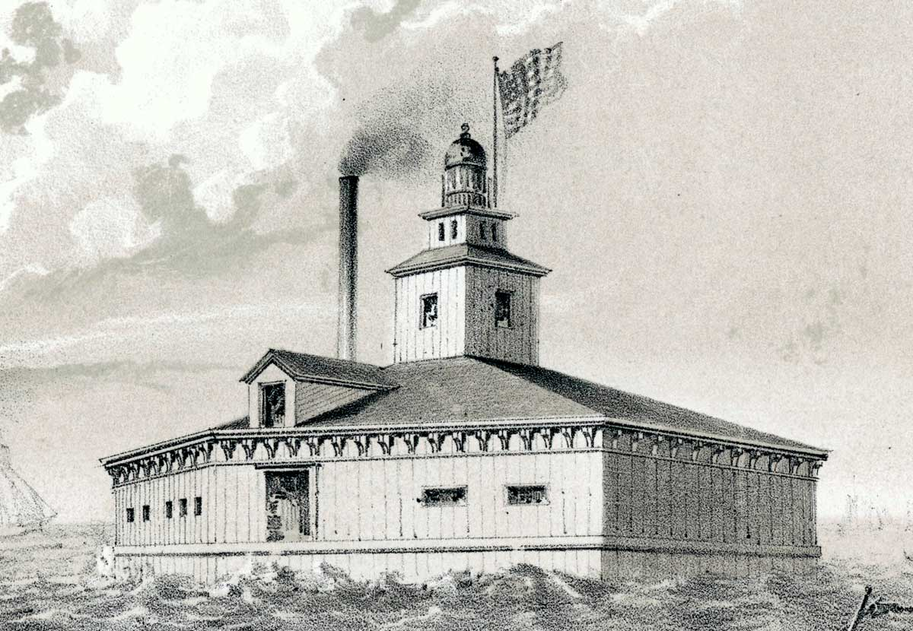

Tour Chicago's Waterways
Discover how the city and its waterways work together.
Rush Street Bridge
-
Rush Street Bridge
As you cross the State Street Bridge, look east to see one of Chicago’s many technical marvels: the Rush Street swing bridge. Also notice the many ships docked in the Chicago River. There, workers load and unload a wide variety of raw materials and manufactured goods.
iChi-63087
-
Swing bridge
Swing bridges pivot on a center pier to allow ships to pass. Sometimes, people are caught on a turning bridge and must wait for it to swing back to continue crossing.
iChi-63088
-
Chicago River
The Chicago River is one of the busiest commercial waterways in North America. Unfortunately, the increasingly dirty stream runs into Lake Michigan, fouling the city’s primary source of fresh drinking water.
iChi-63089
View from Twelfth Street Bridge
-
View from Twelfth Street Bridge
Located southwest of Chicago’s central business district, the Twelfth Street Bridge spans the South Branch of the Chicago River. It is lined with huge grain elevators and lumberyards, which store valuable commodities from across the region.
iChi-63090
-
South Branch
Rising from its headwaters, the South Branch of the Chicago River flows north, joining the North Branch at Wolf’s Point to create the river’s main stem, which empties into Lake Michigan. Industrial growth makes the South Branch dirtier every year.
iChi-63091
-
Grain elevators and lumberyards
Massive amounts of Midwest grain and lumber are shipped to Chicago and stored for sale and distribution. This stimulates Chicago’s economy but has turned the once peaceful stream into a dirty, industrial corridor.
iChi-63092
The Crib
-
The Crib
Recently installed, the new Chicago Crib is a massive structure made of wood and iron. It is forty feet high and rests two miles offshore in thirty feet of water. Numerous ships pass by, carrying goods to and from Chicago.
iChi-63093
-

Chicago Crib
When fully operational, the crib will collect fresh drinking water and send it through an underground tunnel to a pumping station under construction on Michigan Avenue. The fresh water will help reduce the spread of cholera, which killed nearly 2,000 people in the 1850s.
iChi-63094
-
Ships
Hundreds of ships sail in and out of Chicago every day. Lake Michigan is a natural gateway to regional, national, and international markets.
iChi-63095